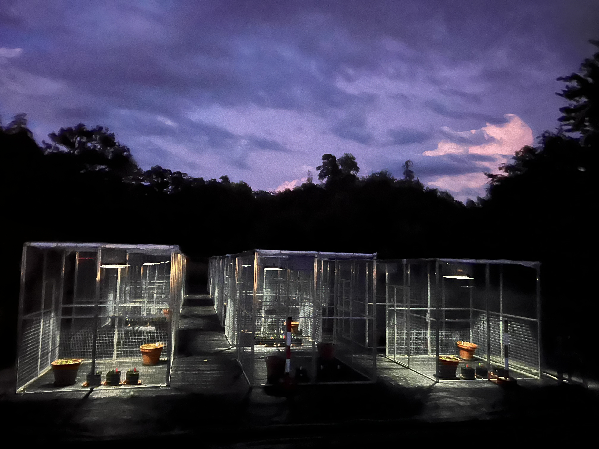
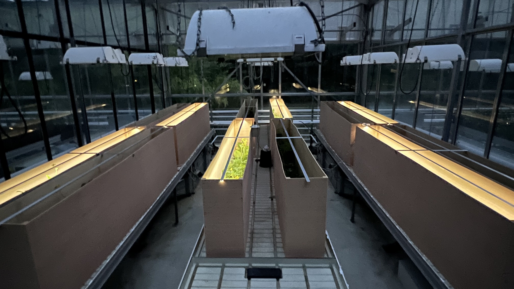

I am a global change ecologist interested in understanding how multiple global change drivers, both individually and interactively, influence plant populations and communities, particularly in the context of coexistence between alien and native species.
To address this, I employ a multifaceted approach, including meta-analysis, field studies, and greenhouse experiments. Building on this, I am currently extending my research into two key components: (1) how multiple global change factors influence biodiversity–ecosystem functioning (BEF) relationships, and (2) how non-native plant species shift their life-history or functional traits in introduced ranges (compared to their native ranges)?